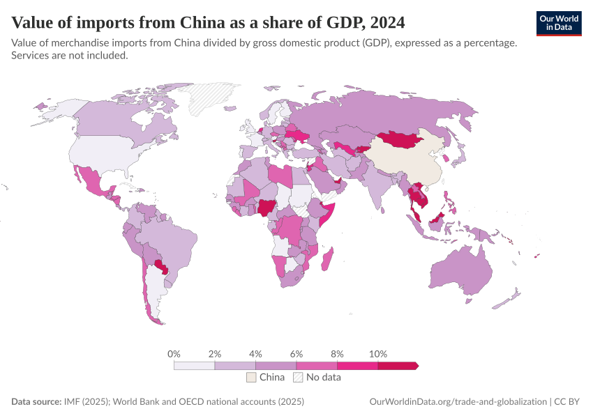
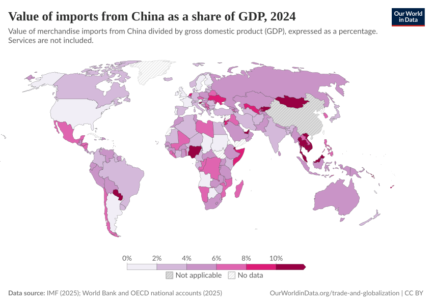

Chart Type:
All (3)
WorldMap (3)
Showing
3
of 3 differences
china-imports-as-share-of-gdp
Copy
Side by Side
Swipe
Code Diff (75)
Deleted

Added

share-europe-using-generative-ai
Copy
Side by Side
Swipe
Code Diff (185)
Deleted
Added
share-of-young-people-in-european-countries-using-generative-ai-tools
Copy
Side by Side
Swipe
Code Diff (185)
Deleted
Added